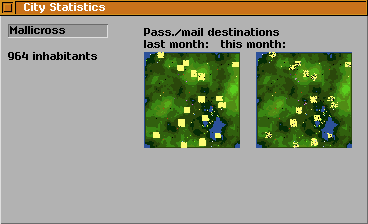

Das Stadtinformationsfenster wird geöffnet, indem man das Rathaus mit dem Abfragewerkzueg anklickt.
Das Rathaus ist das Gebäude direkt südlich des Stadtnamens, im Bild mit einem roten Rechteck hervorgehoben.

Das Stadtinformationsfenster erlaubt es, die Stadt umzubenennen. Dazu klickt man in das Texteingabefeld mit dem Stadnamen und gibt einen neuen Stadtnamen ein.
Das Fenster zeigt außerdem die Anzahl der Einwohner, und deren gewünschte Reiseziele. Die Reiseziele werden für den aktuellen und den vorigen Monat angezeigt.
Die Reiseziele werden als gelbe Punkte in die kleinen Karten eingetragen. Je mehr gelbe Punkte an einer Stelle zu sehen sind, desto mehr Leute wollen dorthin reisen. Diese Information ist nützlich, um den Personentransport zu planen.
Einige Ziele wie Fabriken und Touristenattraktionen erscheinen nur als einzelner gelber Punkt, obwohl recht viele Leute dorthin reisen möchten. Das liegt daran, dass diese Ziele relativ klein sind, und alle Punkte übereinander liegen und deshalb nur als ein einziger gelber Punkt erscheinen.